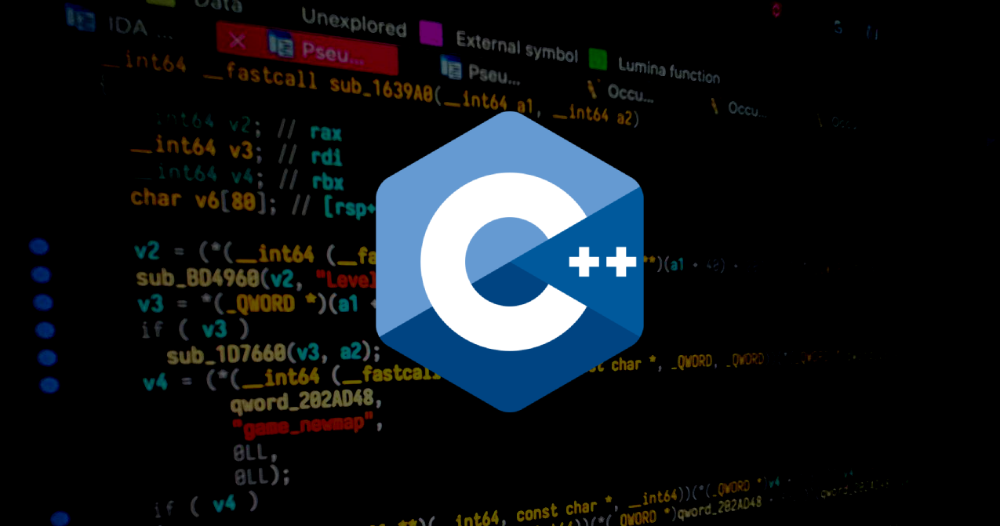
# Introduction
Before we begin, I assume that you already have a good understanding of Object-Oriented Programming and know about the three pillars of OOP: (1) Encapsulation, (2) Inheritance, and (3) Polymorphism. Additionally, you should already be able to easily distinguish between (1) Funciton overloading and (2) Function overriding. The remainder of this post is structured as follows:
- Object-Oriented Programming in C++
- vtables: How C++ polymorphism works under the hood
- Case study: Reverse engineering vtables in real-world binaries (CS:GO)
# Object-Oriented Programming in C++
# Upcasting and Downcasting
class Circle {}; | |
class Ellipse : public Circle {}; | |
int main() { | |
Circle *c = new Circle(5); // [1] | |
Circle *e1 = new Ellipse(4, 3); // [2] | |
Ellipse *e2 = dynamic_cast<Ellipse *>(e1); // [3] if dynamic_cast() fails, e2 will be a nullptr. | |
} |
- Case 1
- We are about to create and initialize a new Circle object.
- We allocate memory using
operator newand obtainc, the address of our new Circle object. cas well as an additional argument5are passed to the constructor of Circle.- The constructor of Circle initializes our new object.
- The address of our new Circle object is stored in a pointer to a Circle.
- Case 2: upcasting
- Ellipse derives from its base class, Circle
- In C++, it is perfectly legal to assign a derived class’s pointer to a base class’s pointer, or bind a derived class’s reference to a base class’s reference.
- What if we want to do this in reverse? The answer is downcasting.
- Case 3: downcasting
- If we need to cast
e1(a Circle) back to an Ellipse again, we need to explicitly downcast it. - If the underlying object pointed to by
e1is indeed an Ellipse, then dynamic_cast() will succeed. - Otherwise, dynamic_cast() will return a nullptr.
- An ellipse is surely a circle, but a circle isn’t necessarily an ellipse, right? 🤓
- If we need to cast
# Overriding Virtual Methods
In C++, if a “member function” (or “method”) is declared virtual , then it will be polymorphic at runtime. Let’s take a look at this example:
class Circle { | |
public: | |
virtual double GetArea() const { | |
std::cout << "Circle::GetArea()" << std::endl; | |
return std::numbers::pi * std::pow(radius_, 2); | |
} | |
// ... | |
}; | |
class Ellipse : public Circle { | |
public: | |
// Since Circle::GetArea() is already virtual, Ellipse::GetArea() will also be implicitly virtual. | |
// As a result, it's not mandatory to write virtual here. However, I believe that it's always a | |
// good practice to mark the overridden methods as virtual, since this makes the function prototype | |
// more self-documenting. | |
virtual double GetArea() const override { | |
std::cout << "Ellipse::GetArea()" << std::endl; | |
return std::numbers::pi * radius_a_ * radius_b_; | |
} | |
// ... | |
}; | |
int main() { | |
std::shared_ptr<Circle> c1 = std::make_shared<Circle>(5); | |
c1->GetArea(); | |
std::shared_ptr<Circle> c2 = std::make_shared<Ellipse>(3, 4); | |
c2->GetArea(); | |
} |
$ clang++ -std=c++20 -o out po.cc && ./out
Circle::GetArea()
Ellipse::GetArea()
In the above program:
- We have two classes:
CircleandEllipse, whereEllipsederives fromCircle.Ellipse::GetArea()overridesCircle::GetArea().
- In main()
c1points to an instance of Circle, and its type isshared_ptr<Circle>c2points to an instance of Ellipse, but its type is alsoshared_ptr<Circle>
- Question:
c2is of typeshared_ptr<Circle>- When we invoke
c2->GetArea(), which method will be called? Circle::GetArea()orEllipse::GetArea()?
- Answer:
Ellipse::GetArea()- Reason: Although an ellipse can be viewed as a circle, but when we need to calculate its area, we want to use the correct formula.
# vtables: How C++ polymorphism works under the hood
You: So, you’re telling me that the above program knows the underlying type
c2points to is actually an Ellipse, not a Circle?
aesophor: Yes, exactly.
You: Wait! How is that possible?
aesophor: This magic is thanks to “vtable”, and we’re going to demystify it now.
In this section, we discuss three types of inheritance in C++, and how vtables look under these circumstances.
# Single Inheritance
When a class has at least one virtual method (including those inherited from its base classes), then through gdb we can see the first 8 bytes is _vptr , a pointer to the vtable of this class. All of its data members will be placed after _vptr .
- The
Derivedclass overrides the methodfoo() - In the vtable of
Derived, the first virtual function isDerived::foo(), notParent::foo().

# Multiple Inheritance
Before we talk about multiple inheritance, we need to clarify two terms: (1) primary base (2) secondary bases.
These terms are borrowed from: Itanium C++ ABI (Revision: 1.75). In short:
class Child : public Base1, public Base2, public Base3, ..., public BaseN {
|__________| |___________________________________________|
Primary Base Secondary Bases
In the following example, the class Child derives from Mother , Father and Aunt (not so ethical…)
Motheris the primary base class, and it shares the same vtable withChild.Fatheris one of the secondary base classes, and it has a standalone vtable.Auntis also one of the secondary base classes, and it has a standalone vtable.
class Mother { | |
public: | |
virtual void mother_foo() {} | |
}; | |
class Father { | |
public: | |
virtual void father_foo() {} | |
}; | |
class Aunt { | |
public: | |
virtual void aunt_foo() {} | |
}; | |
class Child : public Mother, public Father, public Aunt { | |
public: | |
virtual void child_foo() {} | |
}; | |
int main() { | |
Child c; | |
} |
With gdb, we can prove that the aforementioned rules about vtables are correct.
00:0000│ rsp 0x7fffffffe040 —▸ 0x555555557ce0 —▸ 0x555555555272 (Mother::mother_foo()) ◂— endbr64
01:0008│ 0x7fffffffe048 —▸ 0x555555557d00 —▸ 0x555555555282 (Father::father_foo()) ◂— endbr64
02:0010│ 0x7fffffffe050 —▸ 0x555555557d18 —▸ 0x555555555292 (Aunt::aunt_foo()) ◂— endbr64
03:0018│ 0x7fffffffe058 ◂— 0x696db6e89b61aa00
04:0020│ rbp 0x7fffffffe060 ◂— 0x0
05:0028│ 0x7fffffffe068 —▸ 0x7ffff7bc7083 (__libc_start_main+243) ◂— mov edi, eax
Now, let’s look at my slides for a more distilled example
Mother::mother_foo()andChild::child_foo()are placed within the same vtable.- The virtual functions from the primary base class comes first, and then those from the derived class follow.
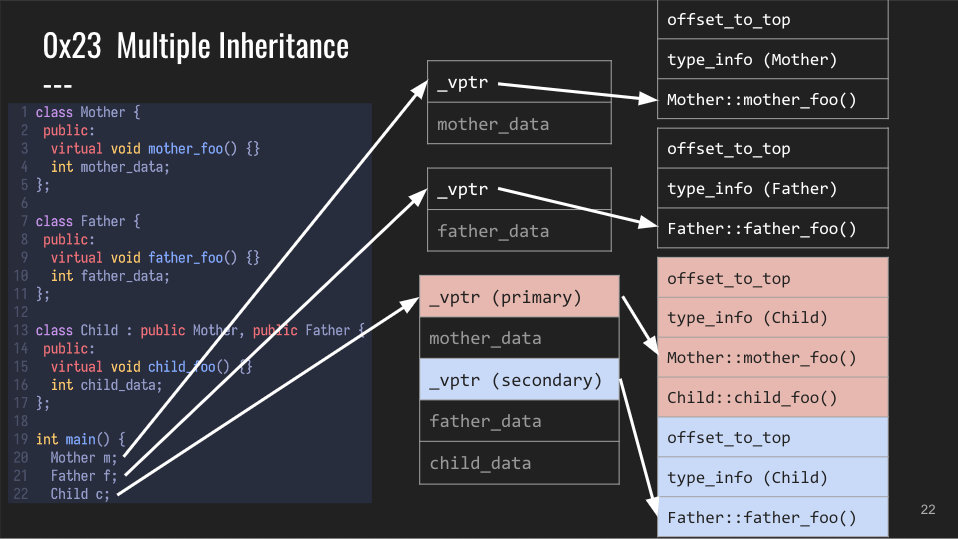
What if Child overrides a virtual function in a secondary base class, you ask…
- A new vtable entry is added to the primary vtable:
Child::father_foo() - In Father’s vtable,
Father::father_foo()is replaced with anon-virtual thunk to Child::father_foo()🤔 - So if we cast a
Child *to aFather *and invokefather_foo()…- it will adjust
thispointer by-0x10(offset_to_top) - call the 2nd virtual function in the primary vtable.
- i.e.
Child::father_foo(/*this=*/rdi - 0x10)
- it will adjust
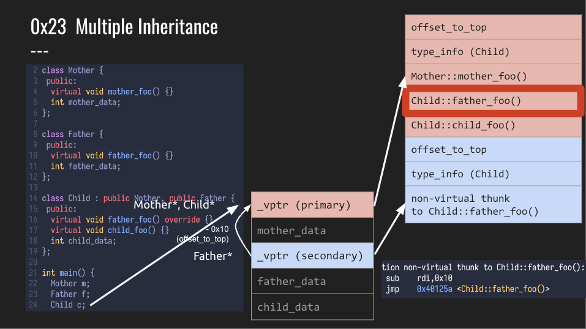
# Virtual Inheritance
Virtual inheritance in C++ is a technique to eliminate the “diamond of death” by ensuring only one copy of a base class’s member variables are inherited by grandchild derived classes. Let’s take a look at an example from libstdc++ 10.2.0:
// Templates omitted for simplicity. | |
class ios_base {}; | |
class basic_ios : public ios_base {}; | |
class basic_istream : virtual public basic_ios {}; | |
class basic_ostream : virtual public basic_ios {}; | |
class basic_iostream : public basic_istream, public basic_ostream {}; |
Without virtual inheritance, the data members of basic_ios will be passed down twice to the most derived class basic_iostream (one via basic_istream , one via basic_ostream ), resulting in ambiguous and duplicated data members in basic_iostream . To understand the layout of vtables under virtual inheritance, let’s begin with the simplest scenario:
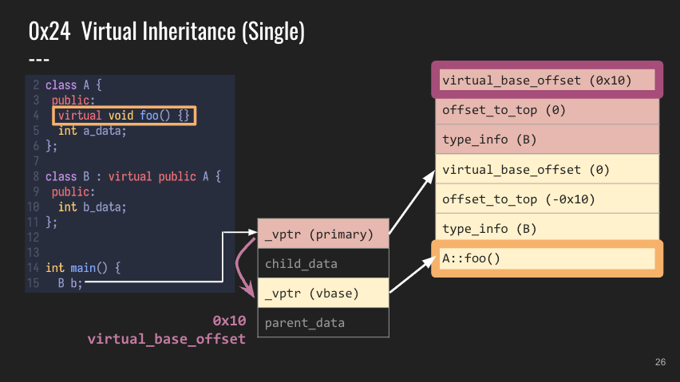
In single inheritance and multiple inheritance, the derived class will share the same vtable ( _vptr (primary) ) with the primary base class. However, with virtual inheritance, the virtual primary base class will always have a standalone vtable ( _vptr (vbase) ). What’s more, a new entry is added to the beginning of all vtables involved: virtual_base_offset . This offset ensures that all parent’s data members will only have one copy, and that they will be stored in a single place (subsequent to _vptr (vbase) ) instead of being stored next to _vptr (primary) .
Next, let’s see what happens if we override a parent’s virtual member function. In the following example, the derived class B overrides foo() from its base class A .
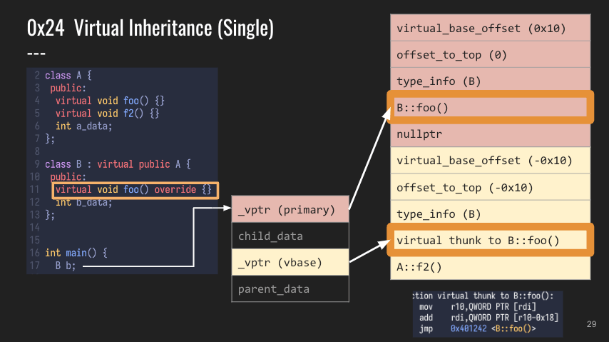
Similar to what happened with multiple inheritance as we discussed earlier, a new entry is inserted into the primary vtable ( _vptr (primary) , and the original entry in the virtual vtable ( _vptr (vbase) ) is now replaced with a virtual thunk to B::foo() . If you recall, we’ve seen a “non-virtual thunk to XXX” before, and this time it’s called a “virtual thunk to XXX”. Quite interesting… 🤔
Finally, let’s consider the most complicated scenario: The Diamond of Death. In the below example, We can see that both B and C virtually inherits from A , and thanks to virtual inheritance, there’s only one copy of A 's data members (they are placed in _vptr (vbase) ).
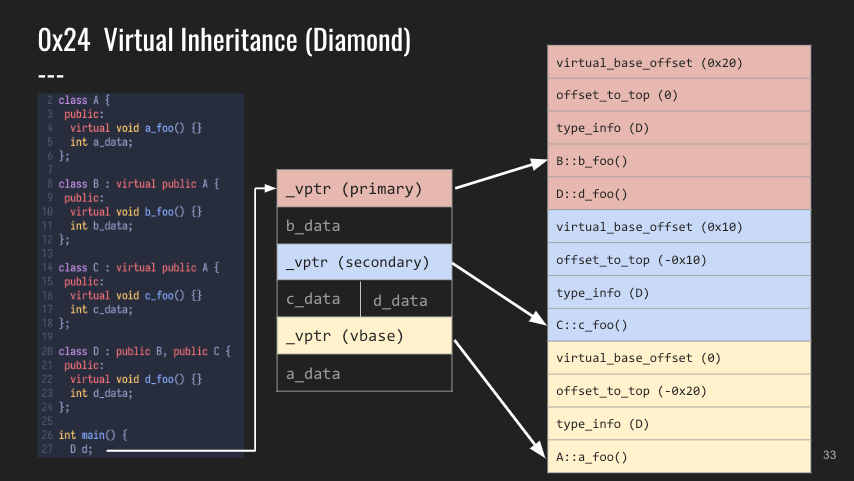
Let’s see what happen if we override a virtual member function from A . Familiar things happen again!
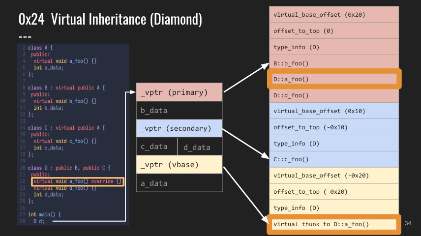
# Case Study: Reverse Engineering C++ vtables in Real-World Binaries
In the last section, we demonstrate how to apply our knowledge in reverse engineering C++ vtable to game hacking. More specifically, we’ll take the x86_64 macOS game client of Counter Strike: Global Offensive, reverse engineer it, and create an internal cheat with aimbot (自瞄外掛).
# Inspecting the Game Client
$ file '~/Library/Application Support/Steam/steamapps/common/Counter-Strike Global Offensive/csgo/bin/osx64/client.dylib'
client.dylib: Mach-O 64-bit dynamically linked shared library x86_64
# Background
From Valve Developer Wiki:
- CUserCmd (“user command”) is the networkable representation of the player’s input, including keys pressed and viewangle.
- Usercmds intended for transmission to the server are created when the engine invokes IBaseClientDLL::CreateMove (once per tick). The usercmds created are stored in a circular buffer (CInput::PerUserInput_t::m_pCommands) until the engine invokes IBaseClientDLL::WriteUsercmdDeltaToBuffer to compress and serialize them to the server.
So the information of the player’s input (including the keys pressed and the current viewangle) is collected into a CUserCmd , buffered in a circular buffer, and then sent to the game server.
The current client mode is also given a chance to manipulate the newly created usercmd via IClientMode::CreateMove.
So what if we can intercept the CUserCmd s and edit them before they’re sent to the server? 🤯
The default implementation (ClientModeShared::CreateMove) delegates to the local player via C_BasePlayer::CreateMove, which in turn passes the usercmd to CBaseCombatWeapon::CreateMove on the active weapon.
By inspecting the leaked codebase from 2013, we can actually find the piece of code matching the above description.
// game/client/clientmode_shared.cpp | |
bool ClientModeShared::CreateMove(float flInputSampleTime, CUserCmd *cmd) { | |
C_BasePlayer *pPlayer = C_BasePlayer::GetLocalPlayer(); | |
if (!pPlayer) { | |
return true; | |
} | |
return pPlayer->CreateMove(flInputSampleTime, cmd); | |
} | |
// game/client/c_baseplayer.cpp | |
bool C_BasePlayer::CreateMove(float flInputSampleTime, CUserCmd *pCmd) { | |
// ... | |
CBaseCombatWeapon *pWeapon = GetActiveWeapon(); | |
if (pWeapon) { | |
pWeapon->CreateMove(flInputSampleTime, pCmd, m_vecOldViewAngles); | |
} | |
// ... | |
} |
# Analysis
Here are the definitions of ClientModeShared and its primary base class, IClientMode .
- Both IClientMode and ClientModeShared will share the same vtable.
- The order of virtual functions appeared in the primary vtable will be the same as how they are declared in the base class.
// game/client/clientmode_shared.h | |
class ClientModeShared : public IClientMode, public CGameEventListener { | |
public: | |
DECLARE_CLASS_NOBASE( ClientModeShared ); | |
ClientModeShared(); | |
virtual ~ClientModeShared(); | |
virtual void Init(); | |
virtual void InitViewport(); | |
virtual void VGui_Shutdown(); | |
virtual void Shutdown(); | |
// ... | |
virtual void ProcessInput(bool bActive); | |
virtual bool CreateMove(float flInputSampleTime, CUserCmd *cmd); | |
// ... | |
}; |
// game/client/iclientmode.h | |
abstract_class IClientMode { | |
public: | |
virtual ~IClientMode() {} | |
// Called before the HUD is initialized. | |
virtual void InitViewport() = 0; | |
virtual void Init() = 0; | |
virtual void VGui_Shutdown() = 0; | |
virtual void Shutdown() = 0; | |
// Called when switching from one IClientMode to another. | |
// This can re-layout the view and such. | |
// Note that Enable and Disable are called when the DLL initializes and shuts down. | |
virtual void Enable() = 0; | |
virtual void EnableWithRootPanel(vgui::VPANEL pRoot) = 0; | |
// ... | |
virtual void OverrideMouseInput(float *x, float *y) = 0; | |
virtual bool CreateMove(float flInputSampleTime, CUserCmd *cmd) = 0; | |
virtual void LevelInit(const char *newmap) = 0; | |
virtual void LevelShutdown() = 0; | |
// ... | |
}; |
# Finding the Index of CreateMove() in the vtable of IClientMode
As of now, we know about two things:
- From Valve Developer Wiki,
IClientMode::CreateMove()has a chance to edit theCUserCmdbefore it is sent to the server. - If we can leverage vtable hijacking and overwrite the address of
CreateMove()in the vtable, our cheat will have a chance to r/w CUserCmd.- ClientModeShared::CreateMove() calls C_BasePlayer::CreateMove().
- IClientMode is the primary base class of ClientModeShared, so they share the same vtable.
- Now we need to find the index of
CreateMove()within the vtable ofIClientMode.
A commonly used technique to find the index of a virtual function within a vtable is leveraging string literals. If we read ClientModeShared::CreateMove() and C_BasePlayer::CreateMove(), we’ll only find out that there are no useful string literals in these two functions. 😓 Luckily, in ClientModeShared::LevelInit() , there are three string literals!
void ClientModeShared::LevelInit(const char *newmap) { | |
m_pViewport->GetAnimationController()->StartAnimationSequence("LevelInit"); | |
// Tell the Chat Interface | |
if (m_pChatElement) { | |
m_pChatElement->LevelInit(newmap); | |
} | |
// we have to fake this event clientside, because clients connect after that | |
IGameEvent *event = gameeventmanager->CreateEvent("game_newmap"); | |
if (event) { | |
event->SetString("mapname", newmap); | |
gameeventmanager->FireEventClientSide(event); | |
} | |
// Create a vgui context for all of the in-game vgui panels... | |
if (s_hVGuiContext == DEFAULT_VGUI_CONTEXT) { | |
s_hVGuiContext = vgui::ivgui()->CreateContext(); | |
} | |
// Reset any player explosion/shock effects | |
CLocalPlayerFilter filter; | |
enginesound->SetPlayerDSP(filter, 0, true); | |
} |
We’ll choose the string “LevelInit”. Search it in IDA.
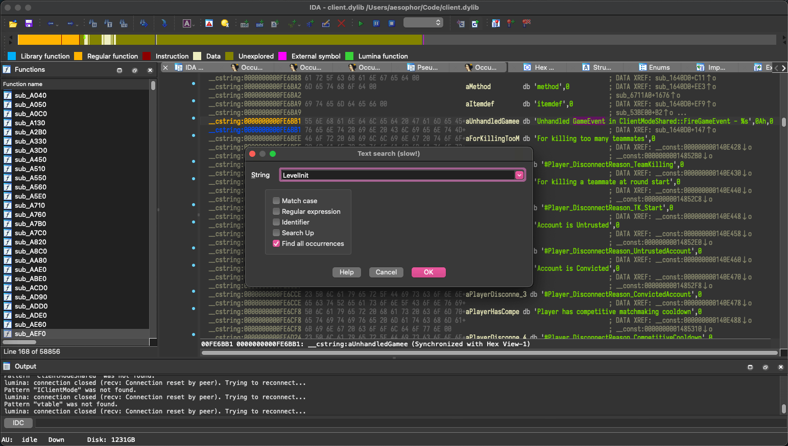
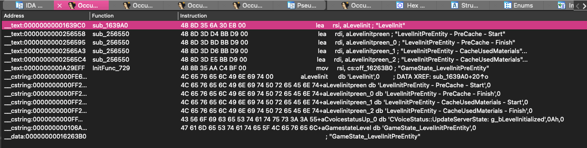
Bingo! The first one is ClientModeShared::LevelInit() (sub_1639A0)
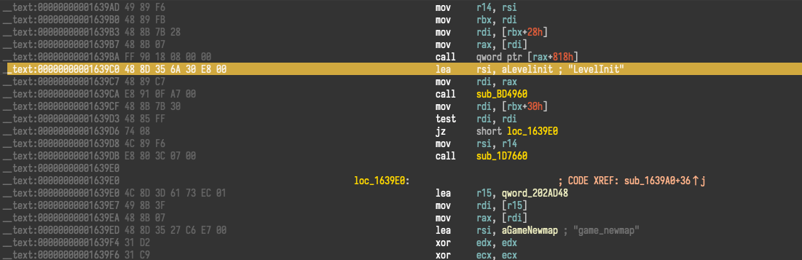
Decompile it, just to make sure it really is the one we’re looking for. LGTM. 🤤
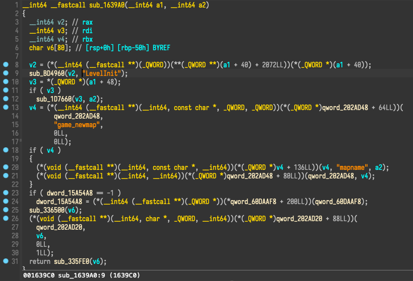
List all the xrefs to sub_1639A0 , and here the second one is the vtable entry we’re looking for.
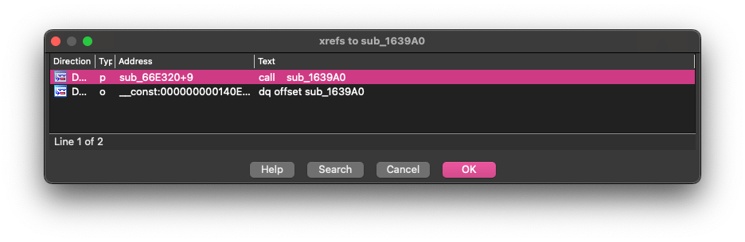
Let’s take a look at the vtable… LevelInit() 's index is 26, so CreateMove() 's index will be 25.
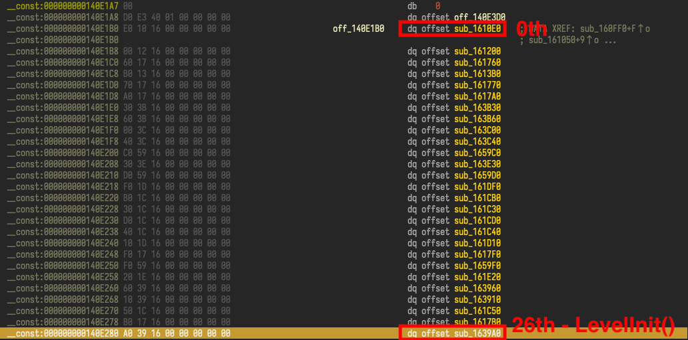
# Exploitation
I’m running x86_64 CS:GO on my M1 Pro MacBook Pro through rosetta2, so we’ll compile and link our cheat into a x86_64 dylib, and then use lldb to inject it into the CS:GO process. The piece of code that hijacks the vtable of IClientMode will look something like this:
void __attribute__((constructor)) OnDylibLoad() { | |
// Obtain the `this` pointer to `ClientModeShared`. | |
auto clientMode = reinterpret_cast<IClientMode *>(GetClientMode()); | |
// Backup the address of the original CreateMove(). | |
using CreateMoveFn = bool (*)(IClientMode *, float, CUserCmd *); | |
CreateMoveFn originalCreateMove = GetVFunc<CreateMoveFn>(clientMode, 25); | |
// Overwrite the address of CreateMove() with our own CreateMove(). | |
memory::PutVFunc(clientMode, 25, CreateMoveHook); | |
} | |
// The original method prototype is: IClientMode::CreateMove(). | |
// So the first argument will be the `this` pointer. Furthermore, | |
// since IClientMode is the primary base class of ClientModeShared, | |
// so using `IClientMode *` and `ClientModeShared` are both okay | |
// since they will have the same address. | |
bool CreateMove(IClientMode *thisptr, float frameTime, CUserCmd *cmd) { | |
// ... | |
hacks::prediction::StartPrediction(localPlayer, cmd); | |
hacks::bhop::CreateMove(localPlayer, cmd); | |
hacks::antiaim::CreateMove(localPlayer, cmd); | |
hacks::autostrafe::CreateMove(localPlayer, cmd); | |
hacks::aimbot::CreateMove(localPlayer, cmd); | |
hacks::prediction::EndPrediction(localPlayer); | |
// ... | |
} |
Here’s my full source code of my CS:GO cheat, but I won’t provide any instructions or tutorials on building the project. If you want to receive a pre-compiled dylib instead of figuring out by yourself, contact me m.aesophor [at] gmail.com for a price.